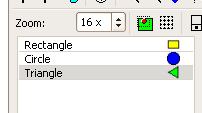

Image tutorial
Table of contents
1. Image designer and painting the image
2. Image list classes as arrays
3. Creating and altering images in the code using ImageBuffer
4. Loading Images from file
5. Processing raster images by scanlines
6. Image cache
1. Image designer and painting the image
In U++, predefined Images needed for application (e.g. as tool bar icons) are usually designed using TheIDE's Image designer.
Image designer stores images in .iml files, which are then included using one of iml headers into C++ and compiled into the application. Such images are in the code represented as static methods of class representing the single .iml file (image list class).
#include <CtrlLib/CtrlLib.h>
using namespace Upp;
#define IMAGECLASS MyImages
#define IMAGEFILE <Image01/images.iml>
#include <Draw/iml.h>
struct MyApp : TopWindow {
MyApp() {
const auto isz = MyImages::MyImage().GetSize();
SetRect(0, 0, 100 + isz.cx, 100 + isz.cy);
}
void Paint(Draw& w) override {
w.DrawRect(GetSize(), SColorFace());
w.DrawImage(50, 50, MyImages::MyImage());
}
};
GUI_APP_MAIN
{
MyApp().Run();
}

2. Image list classes as arrays
You can also access images of image list class as an array and even change them:

#include <CtrlLib/CtrlLib.h>
using namespace Upp;
#define IMAGECLASS MyImages
#define IMAGEFILE <Image02a/images.iml>
#include <Draw/iml.h>
struct MyApp : TopWindow {
MyApp() {
SetRect(0, 0, 170, 170);
}
void Paint(Draw& w) override {
w.DrawRect(GetSize(), SColorPaper());
for(int i = 0; i < MyImages::GetCount(); i++) {
w.DrawImage(50, 80 + 20 * i, MyImages::Get(i));
w.DrawText(80, 80 + 20 * i, MyImages::GetId(i));
}
w.DrawImage(20, 0, 50, 50, MyImages::Get(MyImages::I_Circle));
w.DrawText(80, 0, AsString(MyImages::Find("Circle")));
}
};
GUI_APP_MAIN
{
MyApp().Run();
Image m = MyImages::Circle();
MyImages::Set(MyImages::I_Circle, MyImages::Triangle());
MyImages::Set(MyImages::I_Triangle, m);
MyApp().Run();
}

Index constants representing individual Images in .iml file are based on the name as defined in image designer, placed in image list class scope and prefixed with I_ (like I_Circle in the above example).
Image list classes also provide unified interface class to its content: Iml. In fact, method used in previous example are just wrappers that call Iml methods:
#include <CtrlLib/CtrlLib.h>
using namespace Upp;
#define IMAGECLASS MyImages
#define IMAGEFILE <Image02b/images.iml>
#include <Draw/iml.h>
class MyApp : public TopWindow {
public:
MyApp(Iml& iml) : m_iml(iml) {
SetRect(0, 0, 200, 200);
}
void Paint(Draw& w) override {
w.DrawRect(GetSize(), SColorPaper());
for(int i = 0; i < m_iml.GetCount(); i++) {
w.DrawImage(50, 80 + 20 * i, m_iml.Get(i));
w.DrawText(80, 80 + 20 * i, m_iml.GetId(i));
}
}
private:
Iml& m_iml;
};
GUI_APP_MAIN
{
MyApp(MyImages::Iml()).Run();
}
3. Creating and altering images in the code using ImageBuffer
ImageBuffer represent a write access to the immutable Image value.
#include <CtrlLib/CtrlLib.h>
using namespace Upp;
struct MyApp : public TopWindow {
Image img;
MyApp() {
ImageBuffer ib(50, 50);
for(int y = 0; y < 50; y++) {
RGBA *l = ib[y];
for(int x = 0; x < 50; x++) {
if(y == 0 || y == 49 || x == 0 || x == 49) {
*l++ = Black();
}
else {
l->a = 2 * (x + y);
l->r = 4 * x;
l->g = 4 * y;
l->b = 200;
l++;
}
}
}
Premultiply(ib);
img = ib;
SetRect(0, 0, img.GetSize().cx + 50, img.GetSize().cy + 35);
}
void Paint(Draw& w) override {
w.DrawRect(GetSize(), White);
w.DrawImage(10, 5, img);
w.DrawImage(40, 25, img);
}
void LeftDown(Point p, dword keyflags) override {
ImageBuffer ib(img);
for(int y = 15; y < 35; y++) {
RGBA *l = ib[y];
for(int x = 15; x < 35; x++) {
l[x] = 100 * Red();
}
}
img = ib;
Refresh();
}
};
GUI_APP_MAIN
{
MyApp().Run();
}
To create a new image, create ImageBuffer of required size and simply set RGBA pixels of the image. ImageBuffer provides operator[] returning the pointer to scanlines. When created, assign ImageBuffer instance to Image. Note that this operation clears the ImageBuffer (for performance reasons).
Ultimate++ expects pixel data to be in premultiplied alpha format - Premultiply can do that for the whole ImageBuffer (or Image) in straight format.
To alter existing Image, assign it to ImageBuffer, alter pixels and assign back to the Image. Assigning Image to ImageBuffer clears the Image (again, for performance reasons). In this case, operator* is used to combine alpha value 100 with the Red color, resulting in correctly premultiplied RGBA pixel.
4. Loading Images from file
All of internal processing of raster image data in U++ is performed using the straightforward RGBA 4x8-bit format. In order to process other image format there are Raster and RasterEncoder based classes. Raster represents "input" Image, RasterEncoder "output". Images are processed in scan-lines.
Individual raster formats like BMP or GIF are processed by classes derived from StreamRaster. StreamRaster provides the static interface to register various readers; reads are able to detect whether a given stream is in appropriate format. StreamRaster then contains static methods like "LoadFileAny" which detects the format of an image file and loads it using the appropriate StreamRaster class.
#include <CtrlLib/CtrlLib.h>
using namespace Upp;
struct MyApp : public TopWindow {
Image img;
FileSel fs;
MyApp() {
fs.Type("Image file", "*.bmp;*.png;*.tif;*.tiff;*.jpg;*.jpeg;*.gif");
Sizeable();
}
void Paint(Draw& w) override {
w.DrawRect(GetSize(), White);
if(img) {
w.DrawImage(0, 0, img);
}
else {
w.DrawText(0, 0, "No image loaded!", Arial(30).Italic());
}
}
void LeftDown(Point, dword) override {
Open();
}
void Open() {
if(fs.ExecuteOpen("Choose the image file to open")) {
img = StreamRaster::LoadFileAny(~fs);
Refresh();
}
}
};
GUI_APP_MAIN
{
MyApp app;
app.Open();
app.Run();
}
Important thing to note is that while packages dealing with specific formats self-register for use with LoadFileAny, you need to add specific packages dealing with format to TheIDE project:
plugin/bmp - for BMP file format support
plugin/png - for PNG file format support
plugin/jpg - for JPEG file format support
plugin/tif - for TIFF file format support
plugin/gif - for GIF file format support
5. Processing raster images by scanlines
Sometimes it is important to process images without loading all the RGBA data into the memory. In such case Raster and RasterEncoder provide interface to process them by scanlines. This example converts an image to grayscale (by using just G channel) and saves it as low-quality JPG image:
#include <CtrlLib/CtrlLib.h>
#include <plugin/jpg/jpg.h>
using namespace Upp;
GUI_APP_MAIN
{
FileSel fs;
fs.Type("Image file", "*.bmp;*.png;*.tif;*.tiff;*.jpg;*.jpeg;*.gif");
if(!fs.ExecuteOpen("Choose the image file to convert"))
return;
String fn = ~fs;
JPGEncoder jpg(20);
FileIn in(fn);
One<StreamRaster> raster = StreamRaster::OpenAny(in);
if(!raster) {
Exclamation("Invalid input");
return;
}
FileOut out(fn + ".out.png");
jpg.SetStream(out);
jpg.Create(raster->GetSize());
for(int i = 0; i < raster->GetHeight(); i++) {
RasterLine l = raster->GetLine(i);
Buffer<RGBA> out(raster->GetWidth());
for(int j = 0; j < raster->GetWidth(); j++) {
out[j].g = out[j].b = out[j].r = l[j].g;
out[j].a = 255;
}
jpg.WriteLine(out);
}
}
StreamRaster::OpenAny returns a StreamRaster derived class capable of reading the input stream (or empty One if the format is not recognized).
RasterLine provides the information of single line of Raster. It also hides the differences between referencing the data in the memory (as ImageRaster provides the Raster interface for regular Image) and using buffer to load the scan-line from the input stream (file).
GetLine returns required line from the Raster. Note that not while GetLine provides "random" access to the Raster, not every Raster provides fast seeks back. E.g. It is therefore advisable to avoid seeking back if possible. E.g. plugin/jpg restarts the reading of file when seek back is requested, that can be painfully slow.
WriteLine writes a single raster line to the output RasterEncoder - in this case, JPGEncoder.
6. Image cache
Image cache can significantly speed up GUI when Images are generated based on the set of parameters and the same set o parameters repeats often.
#include <CtrlLib/CtrlLib.h>
using namespace Upp;
Image CreateBall(int r, Color color)
{
int rr = 2 * r;
int r2 = r * r;
ImageBuffer b(rr, rr);
for(int y = 0; y < rr; y++)
for(int x = 0; x < rr; x++) {
RGBA& a = b[y][x];
a.r = color.GetR();
a.g = color.GetG();
a.b = color.GetB();
int q = ((x - r) * (x - r) + (y - r) * (y - r)) * 256 / r2;
a.a = q <= 255 ? q : 0;
}
return Image(b);
}
struct BallMaker : ImageMaker {
Color color;
int r;
String Key() const override {
char h[sizeof(int) + 3];
*(int *)h = r;
h[sizeof(int)] = color.GetR();
h[sizeof(int) + 1] = color.GetG();
h[sizeof(int) + 2] = color.GetB();
return String(h, sizeof(int) + 3);
}
Image Make() const override {
return CreateBall(r, color);
}
};
Image CreateBallCached(int r, Color color)
{
BallMaker m;
m.r = r;
m.color = color;
return MakeImage(m);
}
struct MyApp : public TopWindow {
bool cached;
void Paint(Draw& w) override {
w.DrawRect(GetSize(), White);
for(int y = 0; y < 300; y += 30)
for(int i = 10; i < 500; i += i / 3) {
Color c = Color((200 * i) & 255, (150 * i) & 255, (300 * i) & 255);
w.DrawImage(i, y + i / 5, (cached ? CreateBallCached : CreateBall)(i / 2, c));
}
}
void LeftDown(Point, dword) override {
cached = true;
Title("Now cached - try to resize the window to see the speed");
}
MyApp() {
cached = false;
Title("Not cached - try to resize the window to see the speed, click to activate the cache");
Sizeable().Zoomable();
}
};
GUI_APP_MAIN
{
MyApp().Run();
}
In this example, CreateBall routine creates the Image and takes the time to do so. Anyway, in the Paint, the same resulting Image is needed many times.
Therefore this situation is a good candidate for Image caching. To cache the CreateBall results, you need to create a class derived from ImageMaker. Key virtual method must generate unique String based on required set of parameters, which should be contained as class members. Make method then creates actual Image based on these parameters.
MakeImage function then scans the image cache for the image based on Key result (it uses RTTI to tell apart various ImageMakers). If the required image is not in the cache yet, it is created using Make and cached.
The maximum cache size adjusts dynamically with platform specific maximum (4MB for Win32).
Recommended tutorials:
If you want to learn more, we have several tutorials that you can find useful:
Draw tutorial - in this tutorial we show more advance techniques of drawing inside window. This is the natural continue of things mention on this page.
|


{kind=link}
{kind=link}
{kind=link}
{kind=link}
{kind=link}
{kind=link}
{kind=link}